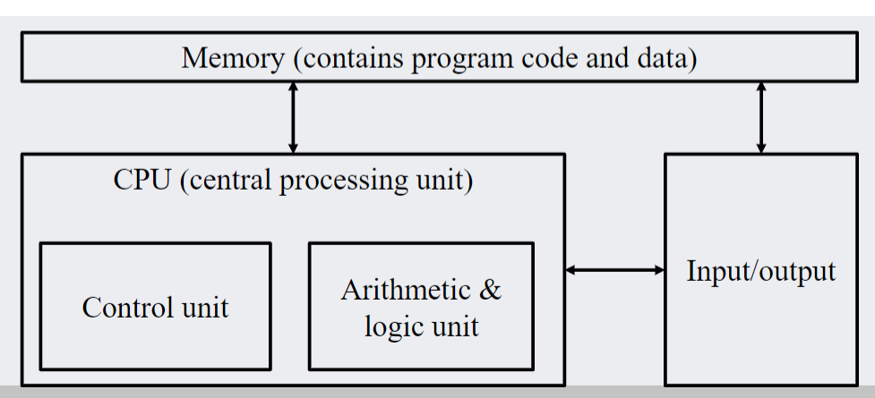
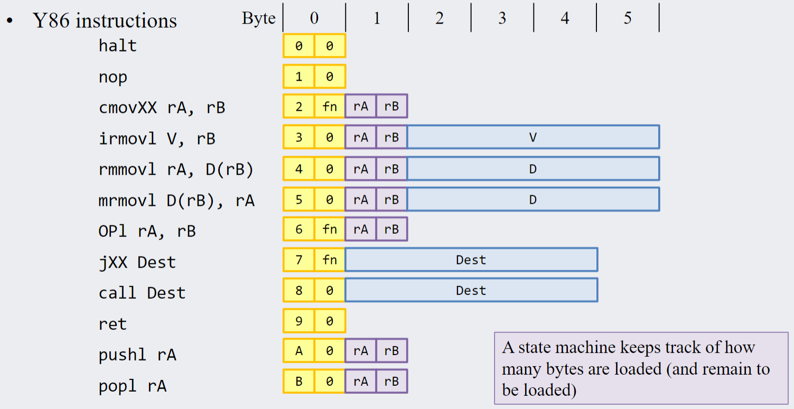

A Working Computer
Goals
Big-O, Big-Omega, and
Big-Theta Notations
a key part in understanding algorithm efficiency - how many
computations are required as the input increases in size?
Definition: Suppose f and
g are real-valued functions of
an integer variable n and
suppose g(n) ≥ 0 for
every integer n greater than
some positive real number 1. If for sufficiently large values of n, A ⋅ g < f, then
f is order at least
g, written as f(n) is Ω(g(n)) 2. If for
sufficiently large values of n, 0 < f < B ⋅ g,
then f is order at
most g, written as f(n) is O(g(n)) f(n) ∈ O(g(n))
$$\boxed{\exists c \in \mathbb{R}^+, \exists
n_0 \in \mathbb{N}, \forall n \in \mathbb{N}, n \ge n_0 \implies f(n)
\le c \cdot g(n)}$$ 3. If for sufficiently large values of n, Aġ < f < B ⋅ g,
then f is of order g, written as f(n) is Θ(g(n))

These three functions are all related > Theorem: Relation between
Ω, O, Θ >
> If f and g are real valued functions defined
on the same set of nonnegative integers, and if f(n) ≥ 0 and g(n) ≥ 0 for every integer
n ≥ r, where r is a positive real number, >
> then f(n) is
Θ(g(n))
⇔ f(n) is Ω(g(n)) and f(n) is O(g(n))
Orders of Polynomial
functions
Theorem:
if r ≤ s then
nr ≤ ns
Big O and Omega of
polynomials
consider g = 15n3 + 11n2 + 9
to find the big omega of the function, we need to find a find a
polynomial less than g.
Trivially, An3 ≤ 15n3 + 11n2 + 9
Similarly, to find the big O of g, we need to find a function that
is larger than g. Suppose we
make every term have the same highest order: 15n3 + 11n2 + 9 ≤ 15n3 + 11n3 + 9n3 ≤ 35n3
Hence, we know g is O(n3), Ω(n3), and Θ(n3).
For polynomials with negatives, this process becomes more difficult.
Suppose we have a polynomial g = n4 − 5n − 8.
To solve this, we need to use the fact that 0.5n4 − n4 = − 0.5n4.
Suppose we have $$\frac{1}{2}n^4 \ge 5n^3 +
8n^3$$ By transitivity, we can extend this to $$\frac{1}{2}n^4 \ge 5n^3 + 8n^3 \ge 5n +
8$$ $$\frac{1}{2}n^4 \ge 5n +
8$$ We then need to find some value a that satisfies this inequalities
$$\frac{1}{2}n^4 \ge n^3(5 + 8) \implies
\frac{1}{2}n \ge (5 + 8) \implies n \ge 26$$ So we find that
a = 26. Next, we can rewrite
our inequality in a more familiar form by subtracting both sides with
n4: $$\frac{1}{2}n^4 \ge 5n + 8 \implies
-\frac{1}{2}n^4 \ge 5n + 8 - n^4$$ We can then flip the
inequality: $$\frac{1}{2}n^4 \le n^4 - 5n
- 8$$ hence, we have found Ω(n4) for the
function g. To find O, a same process as that of the
positive can be applied.
Summary:
To prove Ω(f(n)) of some
function g(n) with
am on the
most significant term
- $A = \frac{1}{2}a_m$
- $a = \frac{2}{a_m}(|a_1| + ... +
|a_n|)$ or 1 (which ever is larger) except for am
- prove by using the fact that $\frac{1}{2}a_mn^m - an^m =
-\frac{1}{2}a_nn^m$
Transitivity in big O
For any function f and
positive real numbers r and
s with r < s,
f(n) is O(nr)
⟹ f(n) is O(ns)
Warning about big O
is is only true for sufficiently large values of n, at smaller values things can be
different. For example linear is better than log at smaller scales
Finding big O
we can just consider the dominating term and ignore the rest of the
terms. Since the largest growing term will dominate
Directly (or indirectly) prove that the formal definition for big O.
- let some c - let some n0 - consider an
unspecified natural number n -
assume that n ≥ n0 - show
f(n) ≤ c ⋅ g(n)
The key is to use the transistive property of inequalities, you can
only increase the bounds of the inequality
never restrict it.
c and n0 can be filled out
AFTER.
Hints for Big O proofs
- n − 1 works for n ≥ 1
- it is reasonable to introduce kn2 − cn
for adequately large values of n (literally pull it out of nowhere)
- you can introduce new negative values as long you do it
properly.
- n/k works for
n ≥ k
A working computer
- a processing unit contains an arithmetic and logic unit, and
processor registers
- a control unit containing an instruction register and a program
- memory storing data and program instructions
- external mass storage
- input and output mechanisms  ##
Memory Think of it as one big array of bytes (1 byte per location, 8
bits)
- each value has a corresponding address pair
- longer instructions are chopped into 8 bytes and stored
consecutively
- ints, floats, long, ascii, and unicode
- only one byte can be transferred per clock cycle to the CPU
 ## Arithmetic and logic units
## Arithmetic and logic units
- combinational component which performs arithmetic and logical
operations
- it can detect overflow and other status
- the function is chosen by multiplexers, select bits will be given by
the control unit (as opcode)
 ## Control
unit
## Control
unit
- a sequential device that controls the process of:
- reading instructions and data from memory
- deciding which instructions to execute
- executing the instructions sequentially
- not exactly true but what it looks like
- contains the program counter (PC), a register that contains the
memory address of the next instruction
Our computer
Implements the fictional Y86 architecture presented in the textbook
by Bryant and O’Hallaron, used in CPSC 313. A small subset of the IA32
architecture
The Y86 cpu has: - 12 types of instructions - one program counter
(PC) register - contains the address fo the next instruction to
execute
- 8 general-purpose 32-bit registers
- used for temporary values we are currently working on
- one 48 bit instruction register (IR)
- holds pieces of an instruction while it gets retireved from
meory
- Condition code register (CCR)
- holds condition flags for the results of arithmetic operations
Instructions:  - instruction
length ranges from 1-6 bytes, it really depends! - exmaple:
irmovl 0xCAFEF00D, %ecx -
 - for every 4 bits: immediate move,
function, source register, destination register, valc
- for every 4 bits: immediate move,
function, source register, destination register, valc
More instructions:
irmovl 0x1A, %ecx
- this instruction stores a constant value in a register (think
assigning value to var)
- in this case it stores the hex value 1A is stored in
%ecx
- “immediate-register move
0x1A to %ecx
- this new values is “immediately” availabel as part of the binary
instruction, and does not need to be retried from memory or a
register
subl %eax %eab
- this subtracts the value stored in one register to the next
- they are the source, and destination registers respectively
- This instruction takes the value contained in
%eax,
subtracts it from the value contained in %ebx, and stores
the result back in %ebx.
Sample program
label: irmovl 0x35, %eax
irmovl 0x3, %ebx
subl %eax, %ebx
jge label
halt
This program: - moves 0x35 (53) into register A - moves
0x3 (3) into register B - subtracts A’s contents from B’s
contents and stores the result in B - checks if the last computed result
is greater or equal to 0 - goes to label if test is true - Test is
false, so execute next instruction (halt, program ends) - A: 0x00000035
(53) - B: 0x00000003 (3)B: 0xFFFFFFCE (−50)
knowing stuff
- how does the computer know which instruction does what?
- each instruction is a sequence of 8 to 48 bits
- the first 8 bits (icode/fcode) determine the instruction type
- Control unit uses these bits to decide how many more bits need to be
retrieved from memory to assemble the complete instruction
- Also will allow the control unit to send the appropriate select
signals to the various multiplexers in the CPU
Executing instructions
The Y86 CPU divides the excecution into 6 stages: - Fetch: read
instructions from memory and determine new PC value - Decode: read
values from registers or other sources - Execute: use the ALU to perform
computations - Memory: read data from or write data to memory -
Write-back: store value(s) into register(s). Occurs when a register is
the destination - PC update: store the new PC value
Some instructions may skip some stages. It needs TWO clocks –>
read data and perform operations, write and update data.
Examples:
irmovl 0xABADD00D, %ecx 1. Fetch: current instruction ←
30F1ABADD00D next PC value ← current PC value + 6 1. Decode: valC ←
ABADD00D 2. Execute: valE ← valC 3. Memory: (no memory access for this
instruction) 4. Write-back: %ecx ← valE 5. PC update: PC ← next PC
value
subl %eax, %ebx 1. Fetch: current instruction ← 6103
next PC value ← current PC value + 2 1. Decode: (valA ← %eax) and (valB
← %ebx) 1. Execute: valE ← valB − valA 2. Memory: (no memory access for
this instruction) 3. Write-back: %ebx ← valE 4. PC update: PC ← next PC
value
jge label 1. Fetch: current instruction ← 7500BABACA
(memory address where the label operation resides)
next PC value ← current PC value + 5 2. Decode: valC ← 00BABACA 3.
Execute: brc ← 1 or 0 (depending on ValE, if the conditions are met) 4.
Memory: (no memory access for this instruction) 5. Write-back: (no
general purpose register access) 6. PC update:
if brc is 0, PC ← next PC value
if brc is 1, PC ← valC
rmmovl rA, D(rB) - “register to memory move” – copies
the contents of rA into memory at the adress D spaces away from the
address contained in rB 1. Fetch: gets the instruction (XXYY) and
calculates next pc value 2. Decode: gets the data from register A and B
(YY) 3. Execute: valE <– adds D to the value in rB 4. Memory: omg it
moves and goes to the memory 5. Write-back: (none) 6. PC update: next pc
value
Working computers (i aint
working)
Operations are separated into two distinct clock cycles: read and
write/execute - read: fetch, decode - execute: executes stuff, update
PC - write: writes data to memory or registers
Overview of the computing stages 1. Fetch stage -
Gets the 6 byte instruction using PC –> and stores in to
IR - reads iCd, iFn, (first
byte). - computes valP depending on iCd
(PC + n) (Preliminary next PC) - reads
rA, rB, valC - rA
are the raw register location rB from the
second byte of the instruction. valC is
the remaining information that the instruction holds - passes on the
info the decode stage 2. Decode stage
- computes srcA, srcB from rA,
rB and dstE based on iCd. -
srcA, srcB are computed
register addresses from rA and rB. - then uses
srcA, srcB addresses to get valA,
valB - the data are passed onto the
execute stage 3. Execute stage -
execute takes valA, valB and sends them to the
ALU. - the ALU, depending on
Opcode from the iFn, it computes
valE by performing operations on valA and
valB - the bch value is computed with the
previous CCR value - CCR is updated
depending on the flags a result of computation. - Update
PC: final valP or some other computed value is
written to next PC depending on the instruction
- Memory
- given the specific instruction and the values of
valE
(the memory location). The value is written to memory (not
registers).
- Write back (only one or
neither of Memory and write back can occur in the same
instruction)
- Register values can also be updated instead of memory
- the values of
valE are written to dstE
(register location)